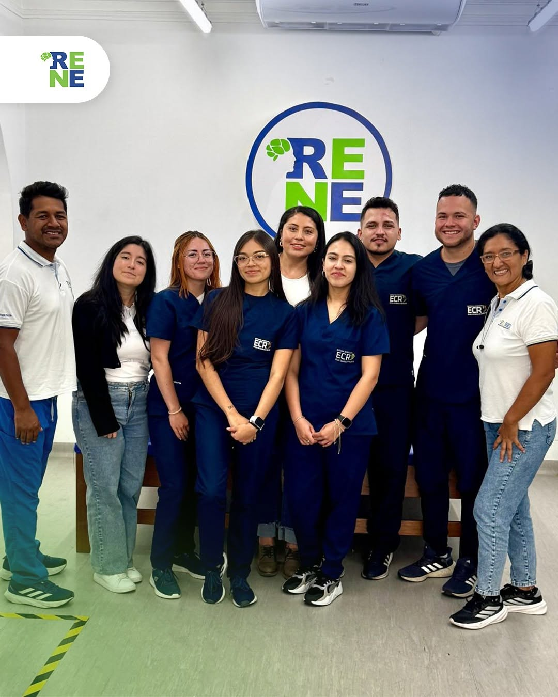
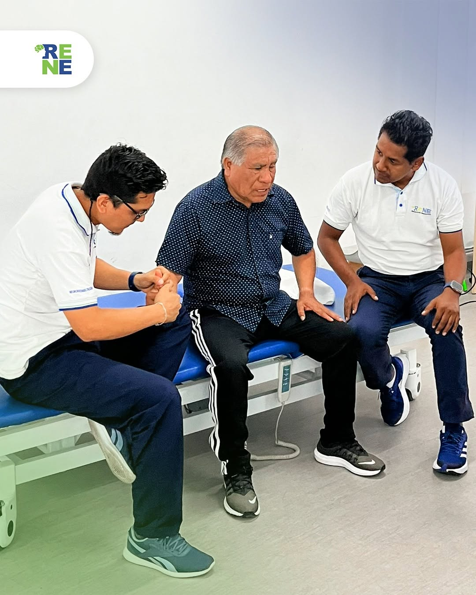
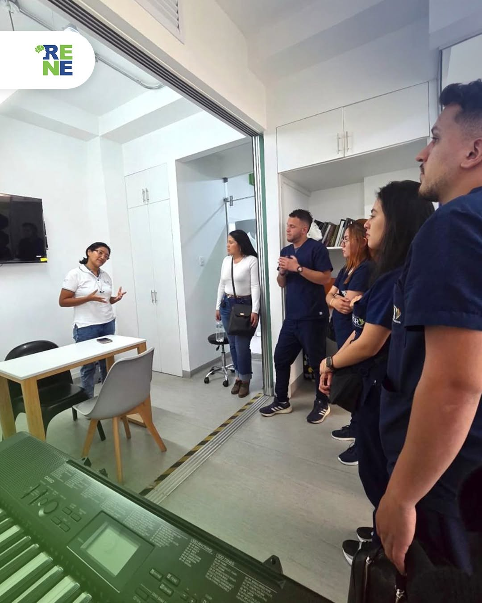

Gestión clínica
Más tiempo para tus pacientes
Descubre cómo una gestión clínica más ordenada puede ayudarte a reducir tareas repetitivas y concentrarte en la atención.
Ver publicaciónIdeas para cuidar mejor
Conoce las publicaciones de RENE Health sobre tecnología, organización y el futuro de la atención médica.
Últimas publicaciones
Una selección de contenidos para profesionales y equipos de salud.

Gestión clínica
Descubre cómo una gestión clínica más ordenada puede ayudarte a reducir tareas repetitivas y concentrarte en la atención.
Ver publicación
Atención médica
La innovación tiene sentido cuando facilita el trabajo del personal de salud y mejora la experiencia de cada paciente.
Ver publicación
Historias clínicas
Cuando la información está disponible y organizada, los equipos pueden tomar decisiones con más contexto y confianza.
Ver publicación
Experiencia del paciente
La atención humana comienza con una buena conversación. Te contamos cómo recuperar ese espacio en la consulta.
Ver publicaciónDigitaliza tu consultorio y organiza tu atención médica desde un solo lugar.